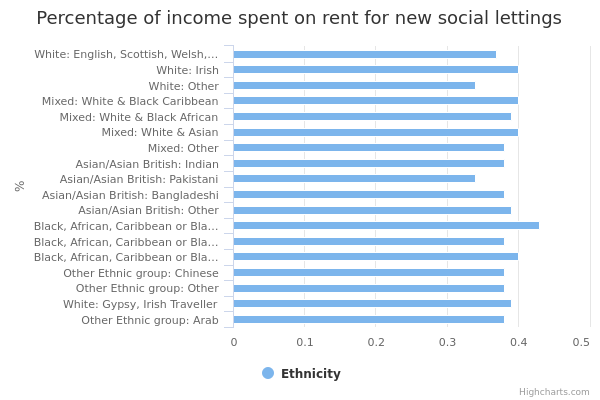
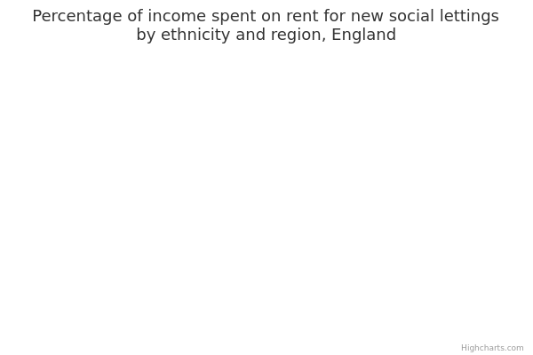

Percentage of income spent on rent for new lettings of social housing
The main facts and figures show that:
-
in 2015/16, 1.6 million households in England rented from a local authority and 2.3 million households rented from a private registered provider (usually a housing association)
-
in 2015/16, there were 374,612 new social housing lettings, with ethnicity known for 355,898 of those
-
the percentage of income spent on rent for new social housing lettings is similar across all ethnic groups, ranging from 34% (Black Caribbean households) to 43% (Pakistani and White Other households)
Things you need to know
These figures are based on the Continuous Recording of Lettings and Sales in Social Housing (CORE). CORE is a complete census of new social housing lettings.
The way the data is collected means there should be no sampling errors in the final dataset. However, there may be some inaccuracy due to missing responses or reporting errors when the data was entered.
Tenants can refuse to give information on their ethnicity. The data used here excludes any records where ethnicity was refused or where information on ethnicity is missing. This means that figures for new lettings may be different from other published figures on social housing.
Social housing is provided by local authorities and private registered providers (mainly housing associations).
Household income used in these figures does not take account of the size or membership of households, which means that we can’t make statements about whether some ethnic groups are poorer compared to others.
For example, 2 households may have the same number of people, but in one household there are several dependent children, while in the other, everyone is employed. In this data, the amount of rent as a percentage of household income has not been adjusted to reflect these differences.
What the data measures
This data measures the amount of rent paid for social housing lettings as a percentage of income, including benefits.
Social housing is let to tenants by local authorities or private registered providers (mainly housing associations).
The figures come from the Continuous Recording of Lettings and Sales in Social Housing (CORE) in 2015/16, which records:
- social housing lettings
- affordable housing lettings
- sales by private registered providers
The CORE data used here relates to new, permanent general lettings of social housing. It doesn’t include other types of letting, except temporary lettings where a household moves into supported housing.
The information relates to households. A household is one person or a group of people (not necessarily related) who have the accommodation as their only or main residence. If it is a group, they must share cooking facilities and also share a living room, sitting room or dining area.
Why these ethnic categories were chosen
This data uses the standardised ethnic groups based on the 2011 census.
White:
- English/Welsh/Scottish/Northern Irish/British
- Irish
- Gypsy, Traveller or Irish Traveller
- Any other White background
Mixed/Multiple ethnic groups:
- White and Black Caribbean
- White and Black African
- White and Asian
- Any other Mixed/Multiple ethnic background
Asian/Asian British:
- Indian
- Pakistani
- Bangladeshi
- Chinese
- Any other Asian background
Black/African/Caribbean/Black British:
- African
- Caribbean
- Any other Black/African/Caribbean background
Other ethnic group:
- Arab
- Any other ethnic group
Percentage of income spent on rent by ethnicity

View the numbers in a table
Percentage of income spent on rent
| Asian/Asian British: Bangladeshi | 38 |
|---|---|
| Asian/Asian British: Indian | 38 |
| Asian/Asian British: Other | 39 |
| Asian/Asian British: Pakistani | 34 |
| Black, African, Caribbean or Black British: African | 38 |
| Black, African, Caribbean or Black British: Caribbean | 43 |
| Black, African, Caribbean or Black British: Other | 40 |
| Mixed: Other | 38 |
| Mixed: White & Asian | 40 |
| Mixed: White & Black African | 39 |
| Mixed: White & Black Caribbean | 40 |
| Other Ethnic group: Arab | 38 |
| Other Ethnic group: Chinese | 38 |
| Other Ethnic group: Other | 38 |
| White: British | 37 |
| White: Gypsy, Irish Traveller | 39 |
| White: Irish | 40 |
| White: Other | 34 |
Summary
This data shows that:
-
the percentage of income spent on rent for new social housing lettings is similar across all ethnic groups, ranging from 34% to 43%
-
Black Caribbean households spend the highest percentage of their income on rent for new social housing lettings (43%)
-
Pakistani and Any Other White households spend the lowest percentage of their income on rent for new social housing lettings (34%)
Download image and data
Percentage of income spent on rent for new social lettings by ethnicity and area

View the numbers in a table
Percentage of income spent on rent
| North East | North West | Yorkshire & Humber | East Midlands | West Midlands | East of England | London | South East | South West | |
| White: British | 36 | 36 | 35 | 35 | 37 | 39 | 46 | 40 | 36 |
|---|---|---|---|---|---|---|---|---|---|
| White: Irish | 40 | 37 | 38 | 40 | 38 | 40 | 46 | 39 | 37 |
| White: Other | 33 | 29 | 28 | 29 | 31 | 34 | 44 | 36 | 32 |
| White & Black Caribbean | 32 | 37 | 38 | 37 | 38 | 42 | 47 | 42 | 41 |
| White & Black African | 36 | 36 | 34 | 38 | 37 | 40 | 45 | 40 | 37 |
| White & Asian | 46 | 39 | 39 | 33 | 39 | 38 | 47 | 37 | 36 |
| Mixed: Other | 36 | 33 | 34 | 36 | 34 | 36 | 46 | 37 | 36 |
| Indian | 34 | 35 | 35 | 34 | 37 | 39 | 44 | 39 | 31 |
| Pakistani | 37 | 32 | 33 | 34 | 33 | 34 | 42 | 36 | 36 |
| Bangladeshi | 31 | 31 | 30 | 35 | 32 | 36 | 42 | 37 | 38 |
| Asian: Other | 42 | 37 | 36 | 35 | 38 | 37 | 44 | 40 | 37 |
| Black Caribbean | 42 | 38 | 38 | 37 | 40 | 40 | 47 | 43 | 38 |
| Black African | 38 | 35 | 33 | 33 | 36 | 37 | 43 | 39 | 37 |
| Black: Other | 38 | 36 | 36 | 35 | 37 | 39 | 44 | 41 | 33 |
| Chinese | 38 | 32 | 26 | 34 | 34 | 40 | 44 | 41 | 33 |
| Other | 36 | 38 | 34 | 33 | 37 | 40 | 43 | 39 | 38 |
| White: Gypsy, Irish Traveller | 41 | 35 | 33 | 35 | 39 | 36 | 46 | 43 | 35 |
| Arab | 40 | 39 | 34 | 36 | 35 | 45 | 48 | 45 | 34 |
Summary
This data shows that:
-
the percentage of income spent on rent for new social housing lettings in London is the highest in England for all ethnic groups, ranging from 42% for Pakistani households to 48% for Arab households
-
the next largest percentage of income spent on rent for new social housing lettings is in the East of England and the South East, ranging from 34% and 35% respectively for White Other households, to 45% for Arab households
-
the smallest proportion of income spent on rent for new social housing lettings is in Yorkshire and the Humber, ranging from 29% for Chinese households to 39% for Mixed White and Asian households
Download image and data
Methodology and data type
Purpose Of Data Source
CORE provides valuable information about new social housing lettings, sales, tenants and buyers across England. This national information is used by government bodies and organisations to inform social housing funding, regulatory and housing policy decisions.
Methodology
The three main types of housing tenure in England are owner occupiers, private renters and social renters. This data refers to new lettings to social renters only. The data is based on the data collected from providers via the on-line COntinuous REcording of Lettings and Sales in Social Housing in England (CORE) system. CORE was first set up in 1989 and initially only required private registered providers (PRPs) to submit social housing lettings and sales information to support the government’s regulatory function. CORE’s remit expanded in 2004 to include local authority information.
Some questions on the CORE questionnaire are not compulsory. In particular, data on household characteristics (age, sex, economic status, ethnicity and nationality) may not be available to the housing officer or may be refused by the tenant.
Imputation: unimputed ethnicity data has been used for the national and regional level analysis.
Weights: data is weighted at the national level analysis, not at the regional level analysis. Weights are calculated for groups of similar local authorities, where these groups are defined by the ONS UK area classifications, and they are based on the comparison with data from another DCLG source on social housing data (Local Authority Housing Statistics).
The Quality Report has further information on the weighting and imputation methodologies.
Data type
Administrative data
Type of statistic
Although it has never been published, the table is based on data that feeds a National Statistics publication.
Suppression rules
Data presented here as counts and their related percentages have been suppressed if counts are either 1 or 2, mainly to avoid possible risk of disclosure. This is consistent with the way we maintain all the confidentiality of CORE data.
CORE records information anonymously and absolute confidentiality on tenants’ circumstances is maintained. Access to record level information is only available via a licence agreement and the data is released via the UK Data Archive’s UK Data Service and the Office for National Statistics Virtual Microdata Lab. This allows users to access record level data via different layers of protection to meet different user needs.
Three licences are available and each has different disclosure controls, access and use restrictions. The End User Licence is for access to datasets that are not private information as defined by the Code of Practice for Official Statistics. Special Licence and Secure Access are for access to micro-data with ‘private’ information as defined by the Code of Practice for Official Statistics. Further detail can be found on CORE disclosure practices
For further information on licencing and the process for accessing CORE record level data, see the UK Data Service website
Estimation
Data on rates has been rounded to 2 decimal places.
Data source details
-
Department for Communities and Local Government
-
Breakdown not previously published, raw data available via the UKDA Special Licence in March 2017
-
Not applicable
-
Autumn 2017
-
Annual
-
The record level data which has been used to produce this analysis can be accessed via the UK Data Archive after a licence application.